Classification of electrochemically active polymers
Electrochemically active polymers can be classified into several categories based on the mode of charge propagation (note that insulating polymers are not considered here, except for those with variable conductivity). The mode of charge propagation is linked to the chemical structure of the polymer. The two main categories are electron-conducting polymers and proton (ion)-conducting polymers. We will focus on electron-conducting polymers here. We can also distinguish between two main classes of electron-conducting polymers based on the mode of electron transport: redox polymers and electronically conducting polymers.
 Redox polymers
Redox polymers
Redox polymers contain electrostatically and spatially localized redox sites which can be oxidized or reduced, and the electrons are transported by an electron exchange reaction (electron hopping) between neighboring redox sites if the segmental motions enable this. Redox polymers can be divided into several subclasses:
- Polymers that contain covalently attached redox sites, either built into the chain, or as pendant groups; the redox centers are mostly organic or organometallic molecules.
- Ion-exchange polymeric systems (polyelectrolytes) where the redox active ions (mostly complex compounds) are held by electrostatic binding.
A typical example for the redox polymers is the poly(vinylferrocene). One example of each of the conductive polymer types is shown in Figure 1. These intend to show the very complex nature of the molecular structure of the units of these polymers. The structural details of polymers to be discussed below will be relegated to the Appendix.
| 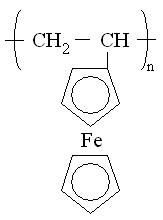 | 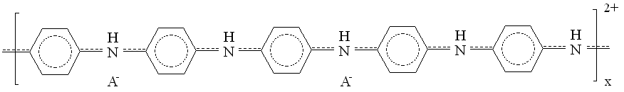 |
| Fig. 1. Left: poly(vinylferrocene), right: polyaniline (A- stands for counter-ion). | |
Electronically conducting polymers (intrinsically conducting polymers)
In the case of conducting polymers, the motion of delocalized electrons occurs through conjugated systems; however, the electron hopping mechanism is likely to be operative, especially between chains (interchain conduction) and defects. Electrochemical transformation usually leads to a reorganization of the bonds of the polymers prepared by oxidative or less frequently reductive polymerization of benzoid or nonbenzoid (mostly amines) and heterocyclic compounds.
Typical examples are polyaniline (see Figure 1), polypyrrole, polythiophene and their derivatives. See the Appendix for more details about the structure and reactions of these polymers.
Chemical and electrochemical syntheses of conducting polymers
Polymers can be prepared using chemical and/or electrochemical methods of polymerization, although most redox polymers have been synthesized by chemical polymerization. Electrochemically active groups are either incorporated into the polymer structure inside the chain or included as a pendant group (prefunctionalized polymers), added to the polymer phase during polymerization, or fixed into the polymer network in an additional step after the coating procedure (post-coating functionalization) in the case of polymer film electrodes. The latter approach is typical of ion-exchange polymers. Several other synthetic approaches exist; in fact, virtually the whole arsenal of synthetic polymer chemistry methods has been exploited. Polyacetylene - now commonly known as the prototype conducting polymer - was prepared from acetylene using a catalyst. Despite its historical role and theoretical importance, polyacetylene has not been commercialized because it is easily oxidized by the oxygen in air and is also sensitive to humidity. From the point of view of applications, the oxidative electrochemical polymerization of cheap, simple aromatic (mostly amines) benzoid (for example, aniline, diphenylamine, o-phenylenediamine) or nonbenzoid (for example, 1,8-diaminonaphthalene, 1-aminoanthracene) and heterocyclic compounds (for example, pyrroles, thiophenes, indoles, azines) is of the utmost interest. Chemical oxidation can also be applied (for example, the oxidation of aniline or pyrrole by perchlorates or peroxydisulfate in acid media leads to the respective conducting polymers) or less frequently reductive polymerization is also possible. The electrochemical polymerization is preferable, especially if the polymeric product is intended for use as a polymer film electrode, thin-layer sensor, in microtechnology, etc., because potential control is a prerequisite for the production of good-quality material and the formation of the polymer film at the desired spot in order to serve as an anode during synthesis. A chemical route is recommended if large amounts of polymer are needed. The morphology of the polymer strongly depends on the conditions of electropolymerization. It has been demonstrated that the formation of supramolecular structures such as nanoglobules, nanofibres, nanotubes, and microspheres strongly depends on the conditions of polymerization. The polymers are obtained in an oxidized, high conductivity state containing counter-ions incorporated from the solution used in the preparation procedure. However, it is easy to change the oxidation state of the polymer electrochemically, for example, by potential cycling between the oxidized, conducting state and the neutral, insulating state, or by using suitable redox compounds. The structure and conductivity can be altered through further chemical reactions. Some experimental details on the electropolymerization of aniline can be found in the Appendix together with some energetic considerations.
Redox transformations and transport processes
The elucidation of the nature of charge transfer and charge transport processes in electrochemically active polymer films may be the most interesting theoretical problem of this field. It is also a question of great practical importance, because in most of their applications fast charge propagation through the film is needed. It has become clear that the elucidation of their electrochemical behavior is a very difficult task, due to the complex nature of these systems.In the case of traditional electrodes, the electrode reaction involves mass transport of the electroactive species from the bulk solution to the electrode surface and an electron transfer step at the electrode surface. A polymer film electrode can be defined as an electrochemical system in which at least three phases are contacted successively in such a way that between a first-order conductor (usually a metal) and a second-order conductor (usually an electrolyte solution) is an electrochemically active polymer layer. The polymer layer is more or less stably attached to the metal, mainly by adsorption (adhesion).
The fundamental observation that should be explained is that even rather thick polymer films, in which most of the redox sites are as far from the metal surface as 10010,000 nm (this corresponds to a surface concentrations of the redox sites of 10-8 to 10-6 mol/cm2), may be electrochemically oxidized or reduced.
According to the classical theory of simple electron-transfer reactions, the reactants get very close to the electrode surface, and then electrons can tunnel over the short distance (tenths of a nm) between the metal and the activated species in the solution phase.
In the case of polymer-modified electrodes, the active parts of the polymer cannot approach the metal surface because polymer chains are trapped in a tangled network, and chain diffusion is usually much slower than the time-scale of the transient electrochemical experiment (for example, cyclic voltammetry). Although we should not exclude the possibility that polymer diffusion may play a role in carrying charges, even the redox sites may get close enough to the metal surface when the film is held together by physical forces. It may also be assumed that in ion-exchange polymeric systems, where the redox-active ions are held by electrostatic binding (that is, in ion-exchange membranes), some of these ions can reach the metal surface. However, when the redox sites are covalently bound to the polymer chain (that is, no free diffusion of the sites occurs), and especially when the polymer chains are connected by chemical cross-linkages (that is, only segmental motions are possible), an explanation of how the electrons traverse the film should be provided.
Therefore, the transport of electrons can be assumed to occur either via an electron exchange reaction (electron hopping) between neighboring redox sites, if the segmental motions make it possible, or via the movement of delocalized electrons through the conjugated systems (electronic conduction).
Electrochemical transformation - usually oxidation - of the nonconducting forms of these polymers usually leads to a reorganization of the bonds of the macromolecule and the development of an extensively conjugated system. An electron-hopping mechanism is likely to be operative between the chains (interchain conduction) and defects, even in the case of conducting polymers.
However, it is important to pay attention to more than just the electronic charging of the polymer film (that is, to electron exchange at the metal/polymer interface and electron transport through the surface layer), since ions will cross the film/solution interface in order to preserve electroneutrality within the film. The movement of counter-ions (or less frequently that of co-ions) may also be the rate-determining step.
At this point, it is worth noting that electronic charging (or simply charging) the polymer is a frequently used expression in the literature of conducting polymers. It means that either the polymer backbone and/or the localized redox sites attached to the polymeric chains will have positive or negative charges as a consequence of a redox reaction (electrochemical or chemical oxidation or reduction) or less often protonation (for example, proton doping in the case of polyaniline). This excess charge is compensated for by the counter-ions; that is, the polymer phase is always electrically neutral. A small imbalance of the charge related to the electrochemical double layers may exist only at the interfacial regions. Discharging the polymer refers to the opposite process where the electrochemical or chemical reduction or oxidation (or deprotonation) results in an uncharged (neutral) polymer, and, because the counter-ions leave the polymer film, in a neutral polymer phase.
| Fig. 2. A schematic picture of a polymer film electrode. |
A simple model of the charge transfer and transport processes in a polymer film electrode is shown in Figure 2. In an electrochemical experiment, the electron transfer occurs at the metal/polymer interface that initiates the electron propagation through the film through an electron exchange reaction between redox couples A and B or electronic conduction through the polymer backbone. (When the polymer reacts with an oxidant or reductant added to the solution, the electron transfer starts at the polymer/solution interface.) Ion exchangers processes take place at the polymer/solution interface; in the simplest case counter-ions enter the film and compensate for the excess charge of the polymer. Neutral (solvent) molecules (O) may also be incorporated into the film (resulting in swelling) or may leave the polymer layer.
Material properties of conducting polymers
For practical reasons, electronically conducting polymers that can be prepared from cheap compounds such as aniline, pyrrole, thiophene, and their derivatives by relatively simple chemical or electrochemical polymerization processes attract the most interest. However, redox polymers are also applied in special cases, such as in biosensors or electrochromic display devices. The most interesting property of electronically conducting polymers is their high (almost metallic) conductivity (see Figure 3), which can be changed by simple oxidation or reduction, and also by bringing the material into contact with different compounds. Conducting polymers usually have good corrosion stabilities when in contact with solution or/and in the dry state. Redox processes combined with the intercalation of anions or cations can therefore be used to switch the chemical, optical, electrical, magnetic, mechanic and ionic properties of such polymers. These properties can be modified by varying the anion size and preparation techniques; by including other chemical species for example. A summary of general properties of conducting polymers is shown in Table I. Several illustrations for the application of conducting polymers are given below.
| 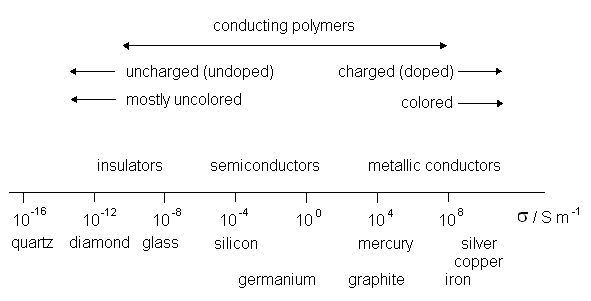 |
| Fig. 3. Illustration of the range of electronic conductivities of conducting polymers in comparison with those of other materials. |
| Table I. Qualitative properties of conducting polymers that conduct in their oxidized state, as a function of their charge state | ||
| Properties | Charging state: reduced | Charging state: oxidized |
| Stoichiometry | Without anions (or: with cations) | With anions (or without cations) |
| Content of solvent | Smaller | Higher |
| Volume | Smaller | Higher |
| Color | Transparent or bright | Dark |
| Electronic conductivity | Insulating, semiconducting | Semiconducting, metallic |
| Ionic conductivity | Smaller | High |
| Diffusion of molecules | Dependent on structure | |
| Surface tension | Hydrophobic | Hydrophilic |
Applications of conducting polymers
Color change and electrochromicdisplay devices
Many conducting polymers exhibit redox states with distinct electronic absorption spectra. When the redox transformations generate new or different visible region bands, the material is said to be electrochromic. The color changes from either a transparent (bleached) state, where the polymer absorbs in the ultraviolet region, to a colored state, or from one colored state to another. In several cases more than two redox transformations can take place, which are accompanied by more than two color changes. The usual color change is from pale yellow or colorless (the reduced state) to green or blue (the oxidized state); for example, polyaniline absorbs at a wavelength of ≤330 nm in its reduced state, the absorbance at ~440 nm increases during the oxidation, and a broad free carrier electron band appears at ~800 nm at more positive potentials. During the oxidation of polypyrrole, the following color changes can be observed: yellow <==> green (420 nm), blue <==> violet (670 nm). However, colorless <==> red (PPD), orange <==> black, or red (470 nm) <==> blue (730 nm) (PT), etc., also occur. This effect can be used in light-reflecting or light-transmitting devices for optical information and storage (displays), or for glare-reduction systems and smart windows in cars and buildings. To be applicable in this context, the response time of the conducting polymer must be fast enough (<100 msecond) and it must be highly reversible upon charging/discharging (for up to 105 cycles or more). Smart windows based on a sandwich structure of ITO/PEDOT - PSS/ITO (indium-tin oxide/poly(3,4-ethylenedioxythiophene) - poly(styrene sulfonated/indium-tin oxide) between glass have been developed. Tuning the color states through modification of the polymer structure has become a basic method in order to achieve multicolor electrochromic displays. The color (that is, the color change) can be tuned by using different derivatives of the same parent monomer.
| 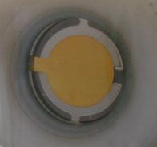 | 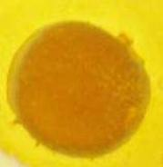 | |
| Fig. 4. Illustration of color changes. | ||
| 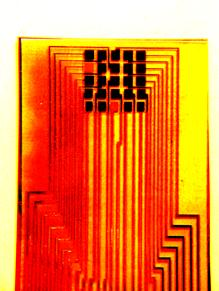 |
| Fig. 5. Flexible electrochromic display. |
The photoluminescence of conducting polymers has also been utilized. When conductive domains are present, the emission from excitons located either inside these domains or near to them is efficiently quenched. Organic electroluminescent devices (LEDs) are a possible alternative to liquid crystal displays and cathodic tubes, especially for the development of large displays. The principal setup for a polymeric LED (light-emitting diode) is ITO/light-emitting polymer/metal.
Sensors
The use of conducting polymers in sensor technologies involves employing the conducting polymers as an electrode modification in order to improve sensitivity, to impart selectivity, to suppress interference, and to provide a support matrix for sensor molecules. All electrochemical transducer principles can also be realized with conducting-polymer-modified electrodes. The role of the conducting polymer may be active (for instance, when used as a catalytic layer, as a redox mediator, as a switch, or as a chemically modulated resistor, a so-called chemiresistor) or passive (for instance, when used as a matrix)
Gas sensors
A variety of gas sensors have been used, one example is an ammonia sensor. Figure 6 shows the response of a PANI (polyaniline) ammonia sensor (relative resistance against time curves at 20oC or 68oF). 10 ppm ammonia was injected into the air at times indicated by the arrows. Figure 7 shows some sensor designs.
| 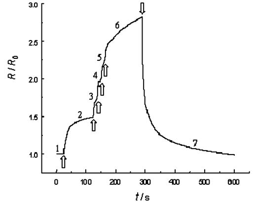 |
| Fig. 6. The response of a polyaniline gas sensor. |
| 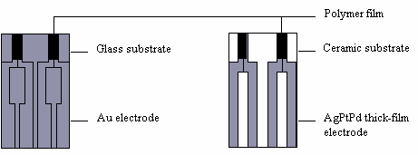 |
| Fig. 7. Layout designs of thin-film and thick-film polymer gas sensors. |
Biosensors
Biosensors are used to detect and analyze for rather complex biological molecules. One specific example is shown in the Appendix.
Other applications
There are many other fields of applications of conducting polymers. Microelectronics, antistatic protection, electromagnetic interference shielding, corrosion protection, artificial muscles, membranes and ion exchangers, power sources, supercapacitors, and electrocatalysis are some promising fields for utilization of these very versatile materials.
Present efforts and future developments
In the last decade the researchers have started to apply novel approaches. The new trend is the fabrication of composites including nanocomposites of polymers and other materials such as carbon nanotubes, graphene or inorganic compounds having special structure and properties. In sensors and biosensors of different kinds (conductometric, impedimetric, potentiometric, amperometric, and voltammetric) conducting polymers are used as active, sensing or catalytic layers, however, in the majority of application those serve as matrices entrapping enzymes or other biologically active compounds. The biocompatibility of several conducting polymers provides opportunity for the application in medicine as artificial muscles and limbs, as well as artificial nerves. The biomimetic (bionic) applications certainly will continue in the future.The key-word of the future is the improvement. The use of the derivatives of the monomers or copolymerization of different monomers may be an option to obtain conducting polymers, which are more flexible or rigid or even crystalline (to be used, for example, in heterojunction solar cells) as well as which are mechanically and chemically more stable, or have a more advantageous processability, etc. The functionalization of conducting polymers which lead to smart materials interacting and responding to their environment is also a great opportunity. The preparation of self-doped polymers is also a good way to overcome the problems of the ionic charge transport during redox switching and other limitations of the use of the polymer. The other possibility is a combination of the arsenal of materials science with chemistry (electrochemistry) to improve the properties for special purposes. Nanocomposites, hybrid materials based on conducting polymers certainly will be important materials in the future. There is a high expectation concerning electroconducting nanomaterials such as nanofibers, nanorods and other nanostructures based on the supramolecular self-assembly of conducting polymers, for example, in the enhancement of the photoluminescence efficiency by utilization of the energy and charge transfer effect in surface resonance coupling. Manipulation of the microstructures of polymers may improve the performances of both the polymer-based transistors and electrochemical cells. There will be tasks for the chemists, electrochemists in the production and characterization of new materials, for the theoreticians to explain the phenomena observed or will be observed and to predict new opportunities, and also engineers to give a final form of the devices. The conducting polymers are relatively cheap materials; however, the specially improved properties can give a further boost concerning the mass production, which makes the products more inexpensive. For instance, making ink from conducting polymers opens up new horizons for printing sensors, electronic circuits, solar cells, light emitting displays, etc. The new trends can nicely be followed by studying the literature including papers and the topics of conferences.
We may expect a continuously improving performance of the new devices due to the new scientific and technological advances, among others the introduction of new materials, improved materials engineering, and more sophisticated device structures.
Considering the rapidly increasing number of applications of polymers in electrochemical cells, it can be declared that electrochemistry is currently moving out of the Bronze Age (that is, typically using metals) and into the era of polymers.
Structure and reactions of some electronically conducting polymers
| 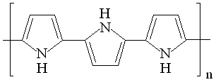 |
| 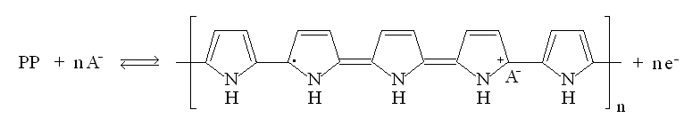 |
| 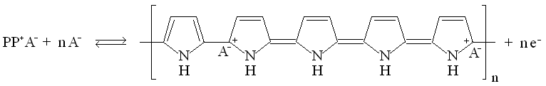 |
| Fig. 8. Structure and redox reactions of polypyrrole. |
There is a color change associated with these reaction: the color change is yellow <==> black.
| 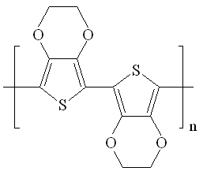 |
| Fig. 9. Poly(3,4-ethylenedioxythiophene) (PEDOT). |
 Some experimental details on the electropolymerization of aniline
Some experimental details on the electropolymerization of aniline
| 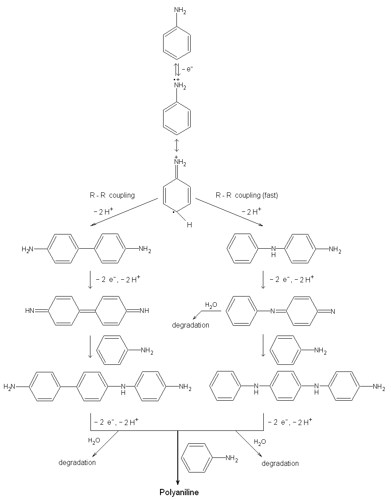 |
| Fig. 10. The reaction scheme for the electropolymerization of aniline [after the paper of H. Yang and A. J. Bard: J. Electroanal. Chem 339, 423 (1992)]. |
| 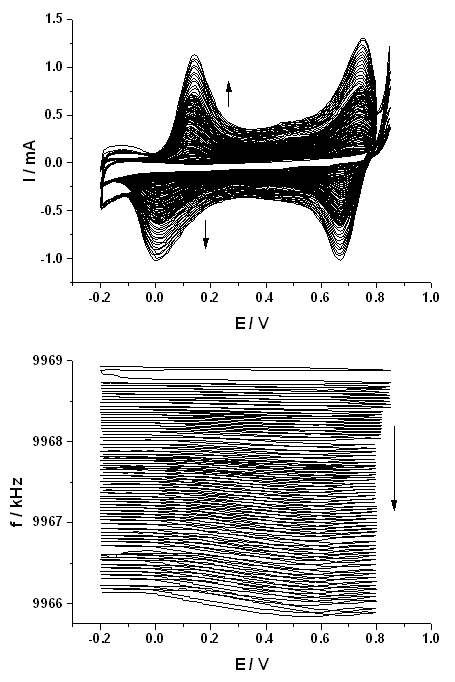 |
| Fig. 11. The cyclic voltammograms and the simultaneously detected frequency changes (frequency decrease is related to the increase of the surface mass) measured by electrochemical quartz crystal nanobalance (EQCN) during the electropolymerization of aniline at a platinum electrode. Sweep rate: 100 mV/s. Solution composition: 0.2 mol/dm3 aniline in 1 mol/dm3 HClO4. |
Thermodynamic considerations
| 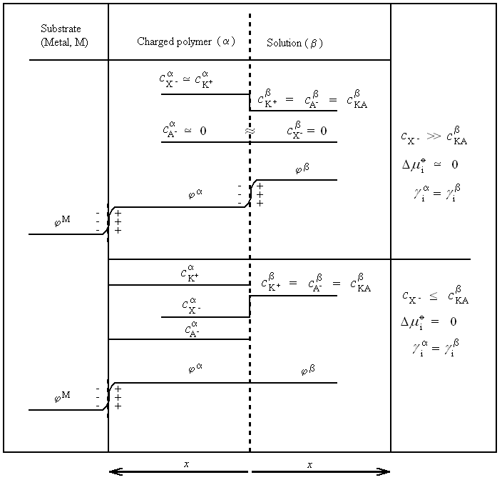 |
| Fig. 12. The concentrations of the ions and the inner potentials in the different phases of a modified electrode arrangement. |
| 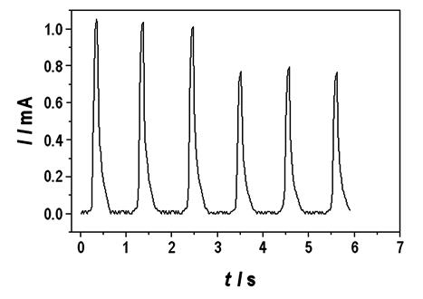 |
| Fig. 13. Chronoamperometric responses. |
| 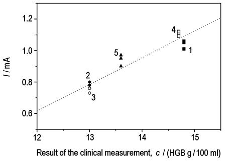 |
| Fig. 14. Comparison between electrochemical and cyanidation methods. |
One important example is the amperometric determination of hemoglobin in whole blood utilizing the catalytic activity of poly(methylene blue). Figure 13. Shows the chronoamperometric responses for consecutive injections into a flow cell of samples of whole blood diluted 1:10 in phosphate buffer (pH 6.24) and 0.5 mol/dm3 NaCl on a poly(methylene blue) electrode at E = 0.4 V against SCE. Flow rate: 4 ml/min. The tall and short waves are the responses to 6 cm3 and 4 cm3 dilute solutions, respectively.
Figure 14 shows a comparison between electrochemical and cyanidation methods for the analysis of blood samples provided by five donors. Blood samples 2 and 3 were from females, while 1 and 4 were from male patients. Patients 1-4 were healthy, while patient 5 was a potentially ill donor. Experimental conditions were the same as for Figure 13.
Related article
Electroactive polymersBibliography
- Conducting Polymers - A New Era in Electrochemistry (2nd edition), G. Inzelt, Springer, Berlin, 2012.
- Rise and rise of conducting polymers, G. Inzelt Journal of Solid State Electrochemistry Vol. 15, pp 1711-1718, 2011.
- Electropolymerization, S. Cosnier, A. Karyakin (editors), Wiley-VCH, Weinheim, 2010.
- Handbook of Organic Conducting Molecules and Polymers (four volumes), H. S. Nalwa (editor), Wiley, New York, 1997-2001.
- Handbook of Conducting Polymers (2nd edition), T. A. Skotheim, R. L. Elsenbaumer, and J. R. Reynolds (editors), Marcel Dekker, New York, 1998.
- Electroactive Polymer Electrochemistry (two volumes), M. E. G. Lyons (editor), Plenum Press, New York, 1994-1996.
- Integrated Chemical Systems, A. J. Bard, Wiley, New York, 1994.
- Molecular Design of Electrode Surfaces (Techniques of Chemistry, Vol. 22), R. W. Murray, Wiley, New York, 1992.
- Handbook of Conducting Polymers (two volumes), T. A. Skotheim (editor), Marcel Dekker, New York, 1986.
- Synthesis of Highly Conducting Films of Derivatives of Polyacetylene, (CH)x, C. K. Chiang, M. A. Druy, S.-C. Gau, A. J. Heeger, E. J. Louis, A. G. MacDiarmid, Y. W. Park, and H. Shirakawa, Journal of the American Chemical Society Vol. 100, pp 1013-1015, 1978. Available on the WWW.
- Electrical Conductivity in Doped Polyacetylene, C. K. Chiang, C. R. Fincher, Y. W. Park, A. J. Heeger, H. Shirakawa, E. J. Louis, S.-C. Gau, and A. G. MacDiarmid, Physical Review Letters Vol. 39, pp 1098-1101, 1977. Available on the WWW.
- Synthesis of Electrically Conducting Organic Polymers: Halogen Derivatives of Polyacetylene, (CH)x, H. Shirakawa, E. J. Louis, A. G. MacDiarmid, C. K. Chiang, and A. J. Heeger, Journal of the Chemical Society. Chemical Communications pp 578-580, 1977. Available on the WWW.
Other Resources
Listings of electrochemistry books, review chapters, proceedings volumes, and full text of some historical publications are also available in the Electrochemistry Science and Technology Information Resource (ESTIR). (http://knowledge.electrochem.org/estir/)